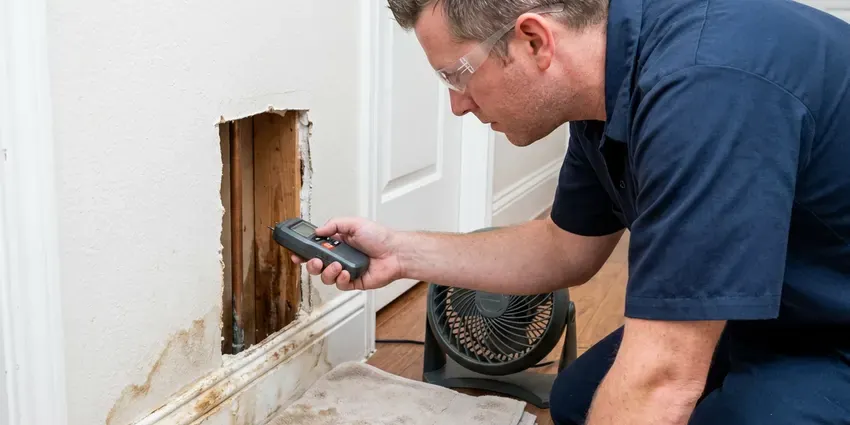

Gas Line Repair in Elkins, WV
From corroded steel lines to damaged CSST, our plumbers repair gas piping across Elkins, WV to code and work with your utility.
- Upfront Pricing Every Time
- Fast, Local Response
- Safety First
- Licensed & Insured Plumbers

Stop Gas Leaks Fast With Licensed Repair in Elkins, WV.
We find the leak, fix the pipe, pass the pressure test and help get your meter turned back on.
Dependable Gas Line Repair for Homes and Businesses in Elkins, WV
GJK Plumbing knows many older homes still have bare or wrapped steel gas lines buried in the yard, and those lines corrode in damp soil over decades. West Virginia has a lot of older housing, and many homes built before 1960 still have galvanized supply lines and cast iron drains. We repair leaks, replace failing sections and perform the pressure test your utility requires to restore service.
Our expertise includes:
- Detecting and fixing gas leaks.
- Repair and replacement of natural gas and propane lines.
- Buried polyethylene and coated steel yard line installation with tracer wire

Additional Plumbing Maintenance Services in Elkins, WV
Our maintenance and specialty plumbing services in Elkins, WV catch small problems before they become emergencies.


Customers
Why Choose GJK Plumbing for Gas Line Repair in Elkins, WV?
We explain what failed, why it failed and what it will take to fix it. You get a clear written price and a safe system.
- Utility Ready, We coordinate inspections so your gas utility can restore service promptly.
- Certified Technicians, Our plumbers are well trained and licensed to work on all types of gas piping systems.
- Experienced Plumbers, Our plumbers have years of experience with various gas piping materials, including black iron pipe, copper, and CSST, providing dependable repairs.
Citywide Coverage
No matter where you are located in Elkins, WV, our commitment to reliable gas line service extends across the entire metro area. We are your local experts, ready to assist with any gas plumbing need.
Experienced Team
Each technician at GJK Plumbing is carefully vetted and trained specifically for gas line work, ensuring they have the deep knowledge of gas codes and repair techniques needed for safe and effective service. You can trust our expertise in Elkins, WV.
Safety-First Approach
We pull permits for gas work where required and pressure test repairs at the code-required pressure and duration. CSST systems get bonding checks to reduce the risk of lightning damage.
Trusted Certified Elkins Plumbing Services Professionals
At GJK Plumbing, we take pride in providing certified plumbing services throughout Elkins, WV. Backed by recognized industry credentials, our experienced plumbers combine technical skill with genuine customer care. Whether it is repair, installation, or maintenance, we follow strict safety and quality standards to deliver long-lasting results you can trust.
Call Us Now PHCC Plumbing Contractor Recognition
PHCC Plumbing Contractor Recognition Better Business Bureau (BBB) Accreditation
Better Business Bureau (BBB) Accreditation Angi Certified Pro
Angi Certified Pro ISO 9001 Quality Management Certification
ISO 9001 Quality Management CertificationTrusted Gas Line Repair Services in Elkins, WV
Pool Heater, Fire Pit and BBQ Lines in Elkins, WV
Outdoor living is a big part of many homes, and many backyards have gas lines for pool heaters, fire pits and built-in grills. These lines face sun, weather and irrigation water that shorten their life. We repair or replace outdoor gas lines and check that they are sized for the appliance load. Proper sizing keeps pool heaters from robbing gas from other appliances.

Gas Leak Detection in Elkins
A rotten egg smell, hissing near a line, dead plants over a buried pipe or a gas meter that moves with everything off are common leak signs. We isolate sections of the system and use electronic combustible gas detectors to narrow the source. Soap solution confirms leaks at fittings, valves and unions. Once we find the leak, we give you a written repair price before we start.
Gas Line Repair Costs in Elkins, WV
Simple connector or fitting repairs often cost $150 to $450. Replacing a section of interior pipe typically runs $400 to $1,200, while buried yard line replacement can range from $1,000 to $4,000 or more depending on length and digging conditions. Rocky or hard-packed soil can add to the labor cost. We give you a firm written price before we start.
Propane Gas Line Service in Elkins, WV
Beyond natural gas, GJK Plumbing also offers expert repair and maintenance for propane gas lines. Propane systems, often used for outdoor kitchens, generators, or in areas without natural gas access, have their own specific requirements for installation and repair. Our team is proficient in working with both underground and above-ground propane lines, addressing problems like regulator failures, pipe damage, or connection leaks. We ensure your propane system in Elkins, WV operates safely and efficiently.
Interior Black Iron Pipe Repair in Elkins
Threaded black iron pipe can leak at joints after years of vibration or settling. We tighten, reseal or replace fittings and sections with new pipe and approved thread sealant. Rusted pipe in garages or exterior walls is replaced before it becomes a danger. We pressure test the system after each repair.
Permit & Inspection Guidance in Elkins
Many gas line repairs, especially those involving significant alterations or new installations, require permits and inspections from Elkins building authorities. We can guide you through this process, making sure all necessary paperwork is filed and that our work meets the strict requirements for final inspection. This helps guarantee the long-term safety and legality of your gas system.
Corroded & Damaged Gas Pipe Replacement in Elkins
Over time, ground movement and moisture can cause underground gas lines to corrode or become damaged, along with tree roots and age. Basements and crawlspaces are both common in West Virginia homes, and hillside lots often need thoughtful planning for sewer and drain routing. We specialize in replacing damaged sections of gas piping, using durable materials like polyethylene (PE) for underground lines or black iron pipe for exposed sections, all installed to current code. Our repairs prevent future leaks and ensure the long-term reliability of your gas supply in Elkins.

Gas Line Relocation & Upgrades in Elkins, WV
Renovating your home or adding a new gas appliance in Elkins, WV may require relocating or upgrading your existing gas lines. Our plumbers can safely extend or reroute gas lines to accommodate new layouts, ensuring proper sizing for increased demand and compliance with all current building codes. This often involves calculating BTU requirements for new appliances and selecting the right pipe diameter.
Gas Line Repair Near Me in Elkins, WV
As a local company, we are deeply committed to the safety and well-being of our community in Elkins, WV. We strive to be the fastest and most reliable option for all your gas line repair needs, ensuring a safe and efficient gas system for your home or business.
When you search for 'gas line repair near me' in Elkins, WV, GJK Plumbing is your local, reliable choice. We pride ourselves on quick response times and expert service, understanding that gas line problems require immediate attention. Our technicians are familiar with the specific challenges of plumbing in the Elkins area.
GJK Plumbing at a Glance
- Licensed and insured plumbers serving Elkins, WV
- Same-day appointments and 24/7 emergency response
- Clear written estimates, no hidden fees
- 4.8-star rated by 832+ West Virginia customers
Elkins Map
Elkins Information
- Population
- 6,755
- Area codes
- Local
- Service area
- Elkins and communities within 40 miles
- Nearby
- Buckhannon, Bridgeport, Clarksburg, Fairmont
Decades-old buried steel gas lines and damp soil lead to corrosion leaks in Elkins, WV, so fast licensed repair keeps families safe.
Expert Services
Trust our professionals for reliable GJK Plumbing solutions in Elkins, WV.
Our Specialized Plumbing Services in Elkins, WV
At GJK Plumbing, we provide a complete range of plumbing services across Elkins, WV. From leak detection to full system installations, our team ensures fast, precise, and affordable service for both residential and commercial properties. Explore our core services below:


How Our Gas Line Repair Process Works in Elkins, WV
At GJK Plumbing, we follow a structured approach to gas line repair, making sure every step is handled with precision and adherence to safety protocols for your peace of mind.
Request a Quote
Contact GJK Plumbing by calling (681) 223-3607 to schedule an appointment. We'll discuss your gas line problem and arrange for a technician to visit your Elkins home.
Thorough Diagnosis
Our certified technician will arrive promptly to inspect your gas lines, using specialized tools to accurately diagnose the problem, whether it's a leak or damage.
Safe & Precise Repair
We will explain the required repairs and provide a clear estimate. Upon your approval, our team will perform the repair using high-quality materials and strict safety standards.
Frequently Asked Questions About Gas Line Repair in Elkins
The cost for gas line repair in Elkins, WV can range from approximately $250 for minor fixes to $5,000 or more for extensive replacements or repairs requiring excavation. Factors like the leak's location, accessibility, and the type of piping influence the final price. We provide transparent, upfront estimates after a thorough assessment.
GJK Plumbing stands behind all our gas line repair work with a strong warranty on both parts and labor. We use high-quality materials from reputable brands such as Gastite, TracPipe, and Wardflex, ensuring the longevity and safety of your repaired system. Specific warranty details will be provided with your estimate.
Yes, our gas line repairs include a written warranty on parts and labor. Every repair is pressure tested before we leave.
Yes, we absolutely can. GJK Plumbing provides repair services for outdoor gas lines connected to grills, fire pits, pool heaters, and other outdoor gas appliances. These lines are often exposed to harsher environmental factors, requiring specific attention to material and installation standards.
No, gas line repairs should never be attempted by an untrained individual. Working with gas lines is very dangerous due to the risk of explosions, fires, and carbon monoxide poisoning. Always hire a licensed and experienced professional like GJK Plumbing for any gas line work.
Dead or yellow grass in a line across the yard, bubbling in wet soil, a hissing sound or a rising gas bill can all signal a buried leak.
Our technicians are experienced with all common types of gas piping found in West Virginia homes, including traditional black iron pipe, copper gas lines, and Corrugated Stainless Steel Tubing (CSST). We use the right tools and techniques for each material to ensure a safe and durable repair.
Many gas repairs and all new gas piping need a permit and inspection from the local building department. We handle the permit and scheduling on your behalf.
What People Are Saying About Our Plumbing Experts?

Daniel K.
A pipe burst at 11 pm and they actually answered. The plumber showed up within the hour, shut everything down, and had us back to normal the next morning. Could not ask for more.
Emergency Plumbing · Elkins, WV
Robert G.
The trenchless sewer replacement saved our front yard. They walked us through the camera inspection footage first so we knew exactly what we were paying for.
Sewer Line Replacement · Elkins, WV
Mark T.
When our office needed drain cleaning, GJK Plumbing provided quick, reliable service. The plumber arrived on time and made sure every drain flowed perfectly before leaving. Very satisfied.
Drain Cleaning · Elkins, WV
Sofia M.
Two new toilets installed in one visit, no mess left behind, and the tech even adjusted a faucet he noticed was dripping. Fair pricing and really friendly.
Toilet Installation · Fairmont, WVLaura S.
I scheduled a water heater replacement, and the team made the process smooth and affordable. The new unit works perfectly, and they cleaned up after completing the job.
Water Heater Replacement · Elkins, WV
Emily R.
I called GJK Plumbing for plumbing repair, and the technician was fast, polite, and thorough. They explained the problem clearly and fixed it the same day. I will definitely hire them again. Highly recommended!
Plumbing Repair · Buckhannon, WV